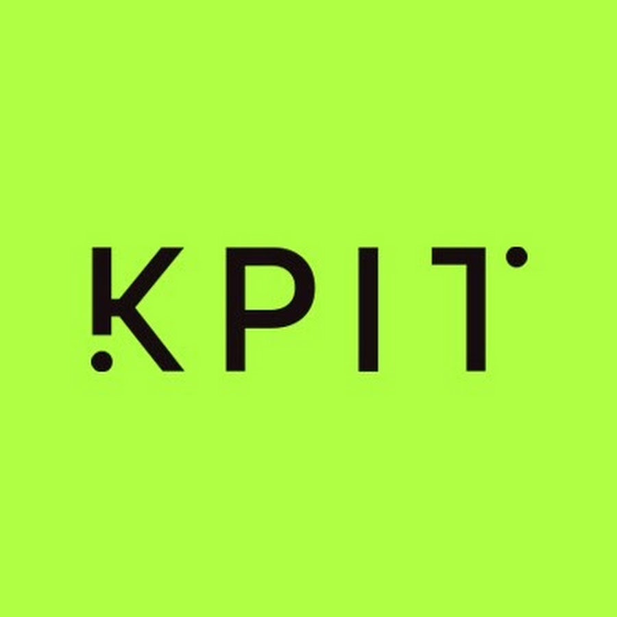
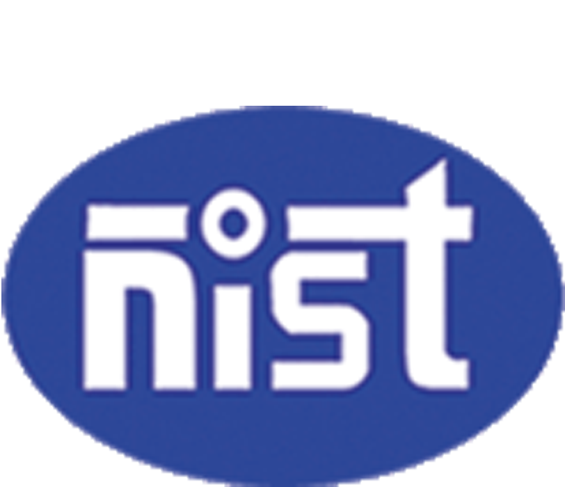

Timeline
Let's journey through my experiences - a blend of education and professional growth - as timelines that have shaped my path to this point.
Professional Experience
KPIT Technologies 
Technical Leader
Oct 2025 - Present
Bengaluru, India
- Designed real-time observability with Datadog Agent and custom RUM SDK scripts, creating production dashboards for frontend RUM metrics, backend service health, and Jenkins CI pipelines, reducing debugging time by ~30%.
- Enabled proactive incident detection through automated alerts and stakeholder notifications, improving system reliability by ~20% and reducing response time by ~25%.
Senior Software Engineer
Oct 2024 - Oct 2025
Bengaluru, India
- Reduced release lead time by ~50% by implementing GitLab Runner CI/CD pipelines (YAML & Bash).
- Containerised services and deployed on AWS Fargate for scalable, cost-efficient hosting.
- Implemented sticky-session support using AWS Application Load Balancer to improve session reliability.
- Built Python tooling to automate Jenkins pipeline interactions via Jenkins REST API.
- Provided client-facing IDE support, contributing to high CSAT scores.
eSthenos technologies
Software Developer
Nov 2021 - Oct 2024
Bengaluru, KA
- Led development of major projects using Flask, Django, MongoDB and AWS, serving 50K+ users with 99.9% uptime.
- Engineered an advanced fraud detection algorithm leveraging Levenshtein Distance, improving user verification accuracy by ~90%.
- Implemented a multi-signature PDF validation system using Protean Gov Technologies API, saving ~200 hours annually.
- Introduced an internal tech blog to foster knowledge sharing and documentation across the company.
Amazon.com
Associate
Feb 2019 - Sep 2021
Amazon India, Bengaluru, KA
- Resolved Fulfilment By Amazon (FBA) issues and supported NA & EU marketplaces using internal mapping tools.
- Mentored and trained 4 global teams (up to 20 members each), improving operational practices and proficiency in Python.
Education
Bachelor of Technology in Computer Science and Engineering 
2014 - 2019
National Institute of Science and Technology, Berhampur, OD
I completed my Bachelor of Technology in Computer Science and Engineering at the National Institute of Science and Technology. My coursework included subjects like Data Structures, Artificial Intelligence, and Database Management Systems. I was actively involved in the Entrepreneurship Development Club, where I promoted entrepreneurship within the college community.
MOOCS and Certificates
Upskilling programs
I've undertaken a series of Massive Open Online Courses (MOOCs) to expand my knowledge and skill set. These courses have covered a wide array of topics, from advanced back-end development to full-stack web application development. The knowledge gained from these MOOCs has not only enriched my technical expertise but has also kept me at the forefront of industry trends and best practices. As a result, I'm well-equipped to take on the challenges of the ever-evolving tech landscape.
- Meta Back-End Developer by Coursera
- Business English Certificate Preliminary by Cambridge University Press & Assessment
- Networks and Deep Learning by Coursera
- Introduction to Data Science by Microsoft Virtual Academy
- Scientific Computing using Python by Freecodecamp
- Problem Solving (Basic) Certificate by HackerRank
Skills
My skills are demonstrated and evaluated in the graphs below. Each skill reflects a journey of learning and application, highlighting my passion for mastering a diverse set of technologies and tools.
Projects
This section showcases few projects that I worked on. The "Chatbot Python" project involves the development of a chatbot using Python. The "Covid19 Notification" project is about creating a notification system for Covid19 updates. The "Dino Bot" project is about the development of a bot for the popular Dino game. The "Random Video Clip Generator", also referred to as "Trailer Maker", is about generating random video clips, potentially for creating trailers. Lastly, the "Killer Shark" project involving a killer shark and a villager.
Testimonials
Thank you to all the industry experts and colleagues who have shared their invaluable recommendations and testimonials. Your kind words and support inspire me to strive for excellence and continuously improve. It's an honor to have had the opportunity to work alongside such esteemed professionals. Your feedback is not only a testament to my work but also a source of motivation for the journey ahead. I am truly grateful for your trust and encouragement.
Suman is a passionate and a dedicated to graphic design work. I know to him since the college time He has dedicated towards information technology sector and stood for any help whenever needed. He has been done various projects in graphic design like gaming and have managed to develop a bond with corporate sector. I wish him success in his future.

Umesh Mandal
Block Development Coordinator Jharkhand at Child in Need Institute (CINI)
Congratulate yourself Suman, for being one of the best Creative person. I have visited many places and met many people; but, you were the most Curious of all. I am happy to see you as a part of my life, and wanna see it in future as well. 👍

Amit Kumar
Technology Consultant, Delloitte
Suman has been a nice student during his career. His special interests in new technology and remarkable general knowledge kept him different from the rest. He has won many quizzes and has actively participated in application development competitions during his B.Tech. tenure. Apart from studies, he is nice at singing and loves spending time with friends. He believes in practicality rather than bookish knowledge.

Rahul Panda
Data Engineer, Google
Suman is a gifted negotiator with a rare combination of patience, spunk, and research skills

R Dinesh Kumar
Senior Software Engineer, Accenture
It's been brilliant working with such an down to earth guy, we were lab partners during our university days. He's very good with computers, whenever you need computer help, he'll do everything for you to solve the problem.